Lab 2 Amazon Web Services (AWS) Setup Instructions
PPOL 5206 Spring 2024
Make sure that you are connected to the Saxanet WiFi network and not the GuestNet network. SSH (TCP port 22) is blocked on GuesNet which means if you are on GuesNet you wil not be able to connect to your cloud VMs or clone repos from GitHub via SSH. Use SaxaNet. #
Follow these instructions step-by-step to setup your AWS environment. The screenshots may look a bit different than what you are seeing, but the flow is the same.
You can click on any screenshot on this page to see its full size version.
Task 1: Accept the Invitation to join the AWS Classroom (the first time)
In your student email inbox, you will have an email from AWS Academy with the subject Course Invitation.
Open the email. Click on the Get Started button as shown in the screenshot below.

Click on the Create My Account button to create a new Canvas Account (note that this canvas account is different from your existing Georgetown canvas account).

Register your new account.

You should now be logged into AWS Academy Learners Lab and seeing a screen like the one shown below. Click on Learners Lab

Scroll all the way to the bottom of the page and accept the Terms & Conditions.

You are now being logged in into the AWS Console. Notice the ⬤ adjacent to the word AWS towards the top left of the page. This indicates that the lab (i.e. the AWS resources) have not yet started. Click on the play button along side Start Lab on the to top right corner of the page to start the lab.


Each lab session that you start is at most 4 hours and you can see a timer showing the remaining time (hh:mm) on the ribbon along with the remaining budget out of the $100 allocated to each account.

This environment is long-lived. When the session timer runs to 0:00, the session will end, but any data and resources that you created in the AWS account will be retained. If you later launch a new session (for example, the next day), you will find that your work is still in the lab environment. Running EC2 instances will be stopped and then automatically restarted the next time you start a session. SageMaker notebook instances will be stopped, but not restarted the next time you start a session.
Monitor your lab budget in the lab interface above. Whenever you have an active lab session, the latest known remaining budget information will display at the top of this screen. This data comes from AWS Budgets which typically updates every 8 to 12 hours. Therefore the remaining budget that you see may not reflect your most recent account activity. If you exceed your lab budget your lab account will be disabled and all progress and resources will be lost. Therefore, it is important for you to manage your spending. Read about how to preserve your budget.
Login into the AWS Console
The AWS Console is your entry point into the AWS cloud.
Click on the AWS link alongside the ⬤.

A new tab will open in your browser, this is the AWS Console.

Note the URL in your browser’s address bar, it will start with the name of the AWS region (such as us-east-1) in which your cloud resources are hosted.
Note the username on the top right hand corner, this is your Federated Identity. Also note that the you did not have to provide any credentials (username/password) to login into the AWS console. How did this happen?

The SSO link to login into the AWS Console (Optional)
Click on the AWS Details link on the ribbon, this will refresh the text in the panel below, click on AWS SSO button that is now visible on this panel. SSO stands for Single Sign-On i.e. you do not need to provide your credentials everytime you want to login into this page. Clicking on the AWS SSO will download a file on your laptop, keep this file somewhere handy as you will need it in future.

Copy the contents of the ssourl.txt file that you just downloaded, open an incognito browser window and paste them into the address bar of this incognito browser window. This will log you in into the AWS Console. You will notice that the URL in the address bar changes to the same URL as you had in the previous step.
The credentials in the SSO link are short-lived, meaning that they are only valid for a short duration and therefore you cannot use them for a different session.
Saving AWS CLI credentials for programmatically talking to other AWS services
Click on the AWS CLI button on the AWS Details.

Click on the Show button. Copy paste the contents you see in a text editor on your laptop and save the file, we will be using these credentials from your EC2 Instance to connect to other AWS services.

Logging into AWS Academy at a later time
- Open the https://www.awsacademy.com/LMS_Login link in your browser window and click on Student Login.

Logging into the AWS Console at a later time
To access the AWS Console in the future, login to https://www.awsacademy.com/LMS_Login, go to Learner Lab -> Modules -> Start Lab.
If you already had an AWS account prior to logging into AWS Academy you would need to login into the AWS Educate AWS account via an Incognito Browser Window.
Task 7: Create a SageMaker Studio Domain and Notebook
The Amazon SageMaker Studio is one of the data science tools that we will be using during this course. We will set a SageMaker Studio domain and start a Jupyter Notebook as part of this task so that we can use it for future labs.
Navigate to SageMaker Studio.

Create a new SageMaker Studio domain. Select setup for organizations. 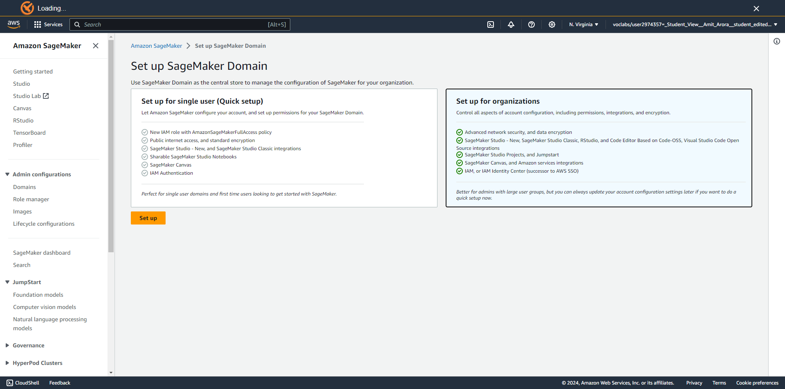
Select a domain name as shown. 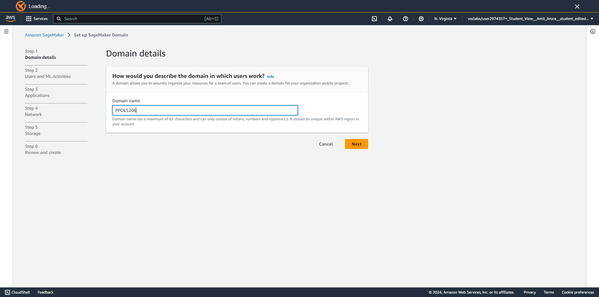
Follow the screenshot and click on next. 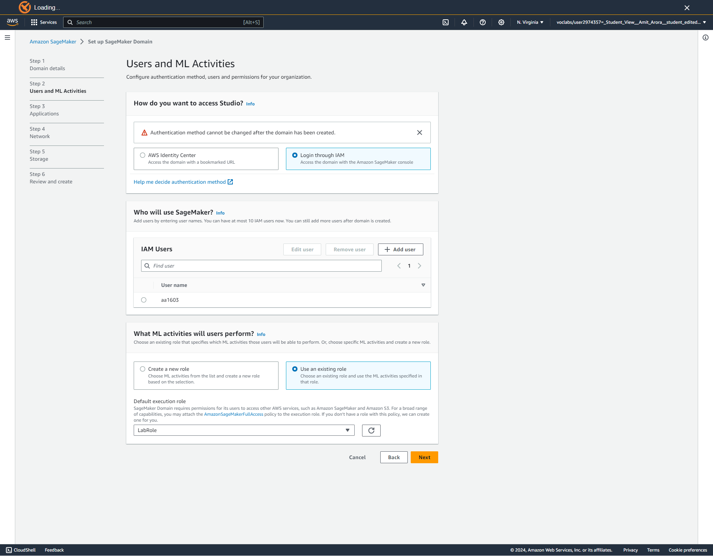
Select Sagemaker Classic and disable time series forecasting. Click on next. 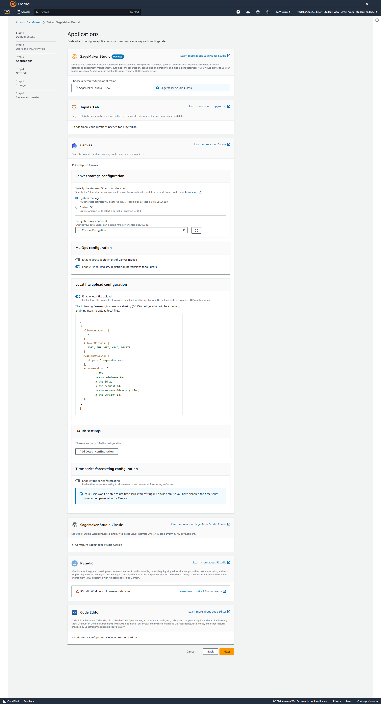
Select the VPCs as shown in the screenshot and default security group. Click on next. 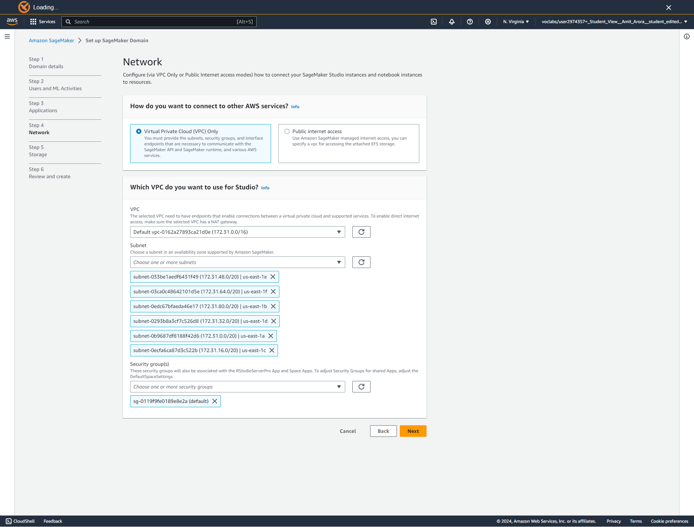
Click on next. 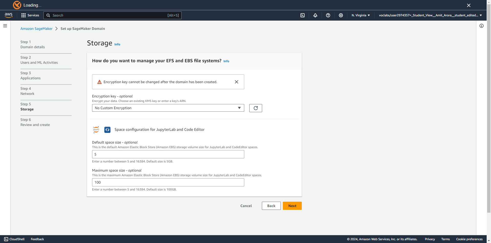
Wait until the domain is created. Refresh the page after a minute or two. 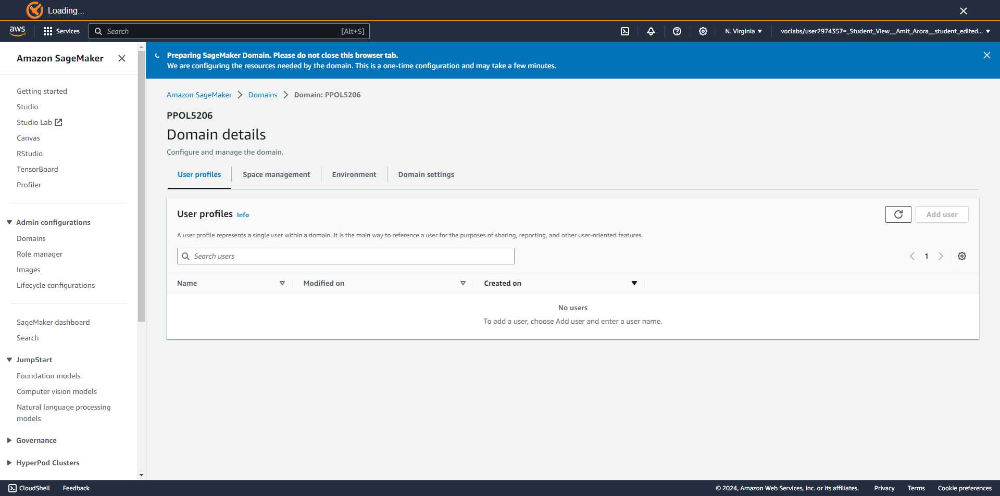
Now click on the Add User button after the domain is created. 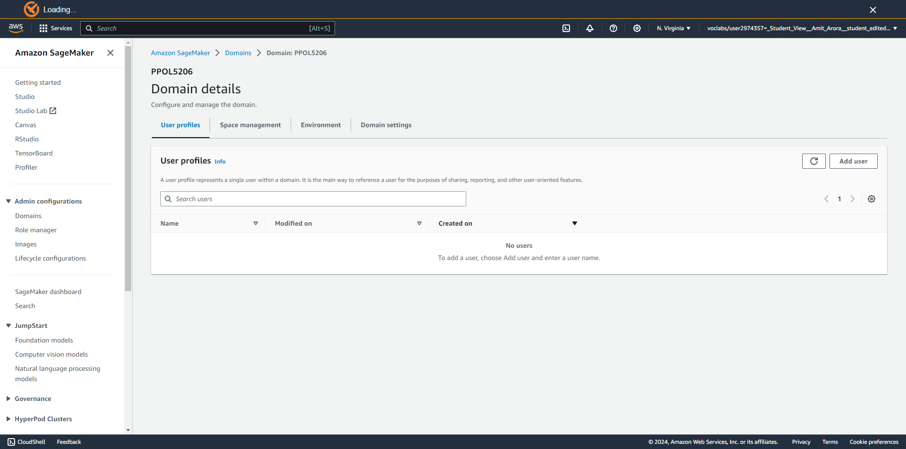
Rename the default-abc to your netid. Click on next. 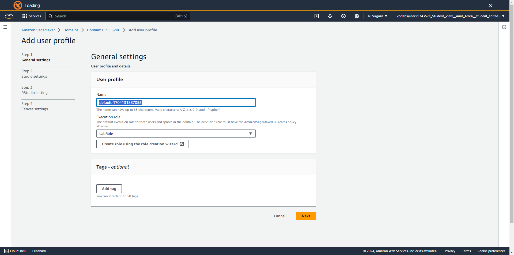
Click on next. 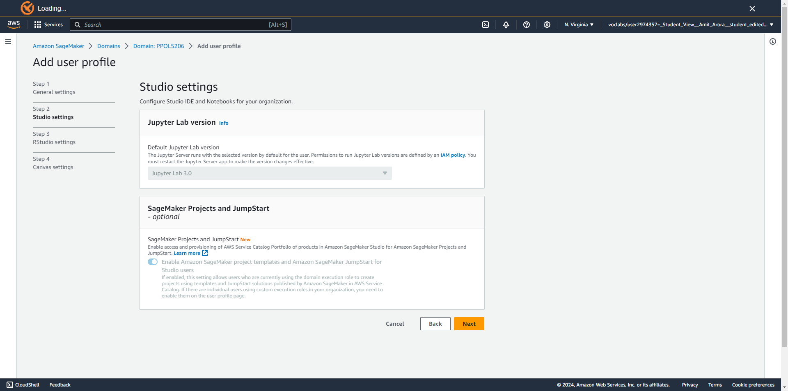
Click on next. 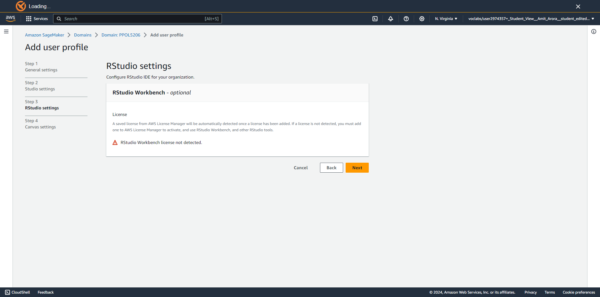
Disable everything related to canvas as shown in the screenshot. Click on next. Your domain will be successfully created. 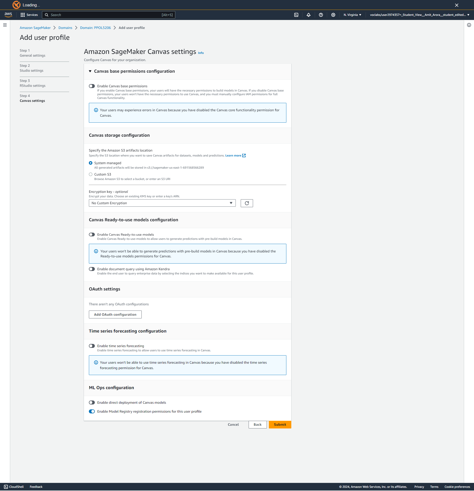
Wait for a while for the domain to be created. Refresh the page after a minute or two. 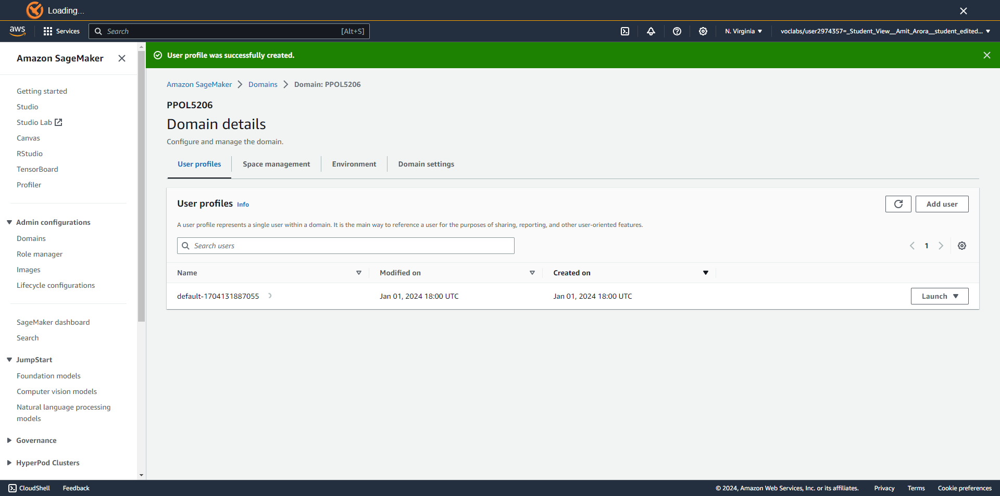
Click on Launch, Select Studio. 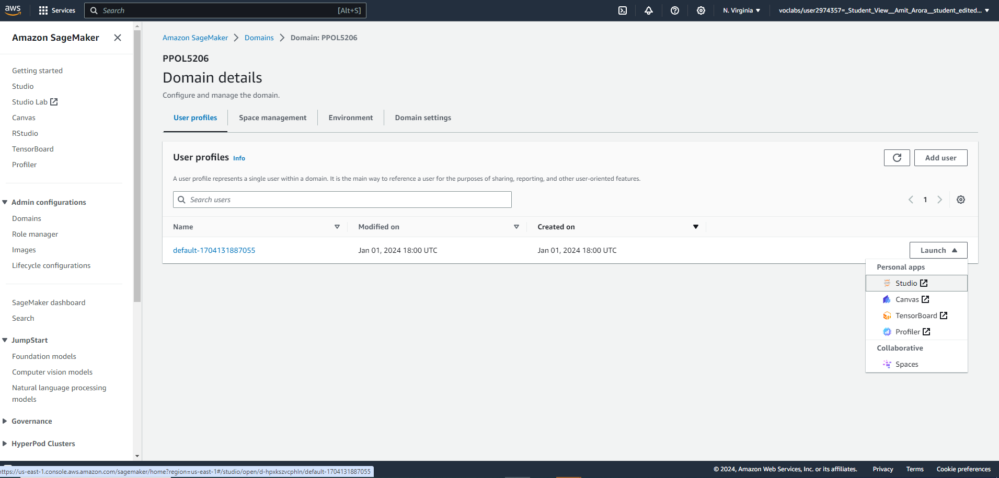
Sage Maker studio would be launched. Wait for it to get started. It usually takes a few minutes for the initial launch. 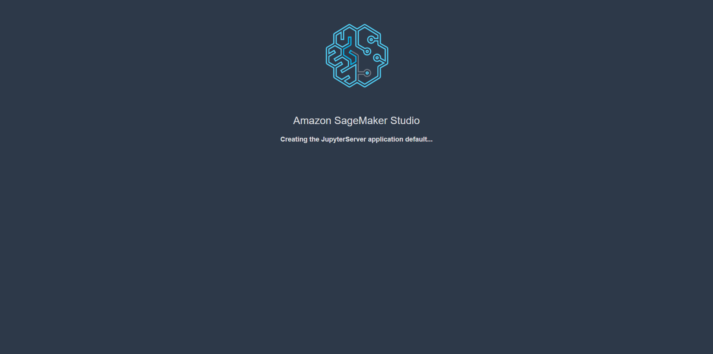

{kind=link}
{kind=link}
{kind=link}
{kind=link}
{kind=link}
{kind=link}
{kind=link}
{kind=link}
{kind=link}
{kind=link}
{kind=link}
{kind=link}
{kind=link}
{kind=link}
{kind=link}
This is called a managed service, you get to work on the notebook without having to deal with the creation steps for the underlying infrastructure. You can easily change this configuration as per the requirements of the analytics/machine learning job you are running.

Task 8: Use SageMaker Studio Notebook for analyzing a simple dataset (OPTIONAL)
We will analyze the StateNames.csv dataset that is now present in your S3 bucket using the SageMaker Studio Notebook we just created.
Clone the git repo for this lab into SageMaker.

The URL of the git repo would be of the format shown in the screenshot below.

Once the repo is cloned, double click on the repo folder and then on the analytics.ipynb file in the repo. This will open the Jupyter notebook in a SageMaker Studio Notebook.

The notebook downloads the dataset from your S3 bucket and has some tasks for you to do. Complete tasks 2, 3, 4 and 5 marked in the notebook and checkin the completed notebook in the git repo.
Shutting down SageMaker Studio
It is important to shutdown SageMaker Studio when not in use so that you do not get billed for it when you are not using it.
Click on File -> Shutdown.

Select Shutdown All.

At the end of this lab:
Make sure you shutdown SageMaker Studio.
Make sure you shutdown EC2 VM.
Make sure you have ended the lab in AWS Educate by pressing the End Lab button.